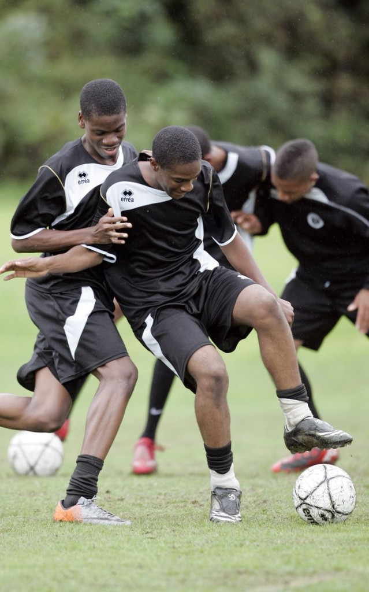

A new school, a first website, and skills I want to grow this year.
New school
What I want to do this year
I left my previous school and started a new chapter — a new place, new people, and a completely different system.
My goals: settle in, try subjects I have not done before, make teammates and classmates I can learn with, and treat this website as proof that I can learn fast when something is new.
This website
First public site
Building this site is my first real web project. I want it to look like me — clear, personal, and easy to read.
Next: add my own photo, keep tightening the layout, and update these pages as school projects grow.
Sports
Football first

Football is the sport I take most seriously. At school I also want to try other sports so I stay fit, competitive, and open to new teams.
Next: train consistently, learn from coaches, and show up as a teammate people can count on.
New skills
Drums and outdoor curiosity
I am learning to play the drums. I also like trying practical skills — like starting a fire with a magnifying glass and wood — because I enjoy figuring things out with my hands.
Next: practice rhythm until it feels natural, and keep saying yes to new skills that make school more interesting.